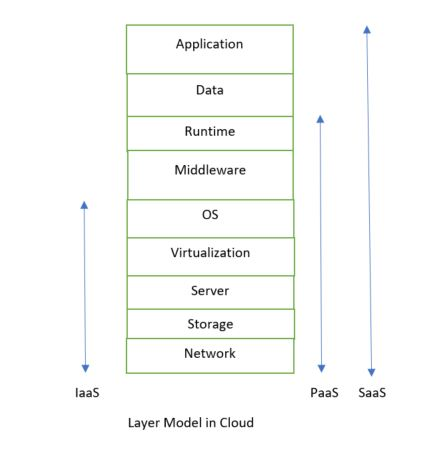

Services Models/Services in Cloud
There are three kind of service models in cloud -
1. Infrastructure as a Service(IaaS)
2. Platform as a Service(PaaS)
3. Software as a Service(SaaS)

Infrastructure as a Service (IaaS) -
-> IaaS is also known as Hardware as a Service (HaaS).
-> It is a computing infrastructure managed over the internet.
-> The main advantage of using IaaS is that it helps users to avoid the cost and complexity of purchasing and managing the physical servers.
Characteristics of IaaS -
There are the following characteristics of IaaS -
a. Resources are available as a service
b. Services are highly scalable
c. Dynamic and flexible
d. GUI and API-based access
e. Automated administrative tasks
Example: DigitalOcean, Linode, Amazon Web Services (AWS), Microsoft Azure, Google Compute Engine (GCE), Rackspace, and Cisco Metacloud.
Platform as a Service (PaaS) -
-> PaaS cloud computing platform is created for the programmer to develop, test, run, and manage the applications.
Characteristics of PaaS -
There are the following characteristics of PaaS -
a. Accessible to various users via the same development application.
b. Integrates with web services and databases.
c. Builds on virtualization technology, so resources can easily be scaled up or down as per the organization's need.
d. Support multiple languages and frameworks.
e. Provides an ability to "Auto-scale".
Example: AWS Elastic Beanstalk, Windows Azure, Heroku, Force.com, Google App Engine, Apache Stratos, Magento Commerce Cloud, and OpenShift.
Software as a Service (SaaS) -
-> SaaS is also known as "on-demand software".
-> It is a software in which the applications are hosted by a cloud service provider.
-> Users can access these applications with the help of internet connection and web browser.
Characteristics of SaaS -
There are the following characteristics of SaaS -
a. Managed from a central location
b. Hosted on a remote server
c. Accessible over the internet
d. Users are not responsible for hardware and software updates. Updates are applied automatically.
e. The services are purchased on the pay-as-per-use basis
Example: BigCommerce, Google Apps, Salesforce, Dropbox, ZenDesk, Cisco WebEx, ZenDesk, Slack, and GoToMeeting.
Difference between IaaS, PaaS, and SaaS